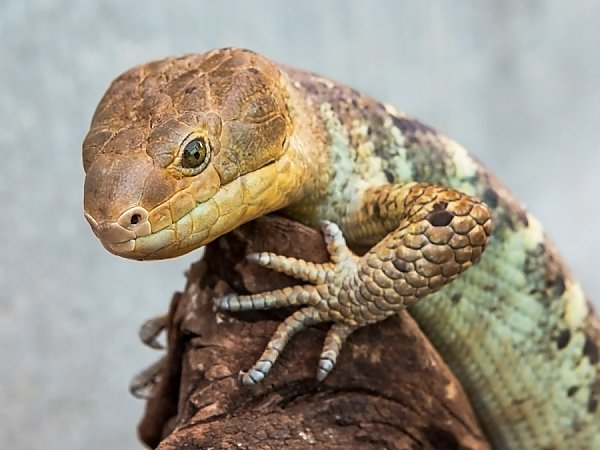
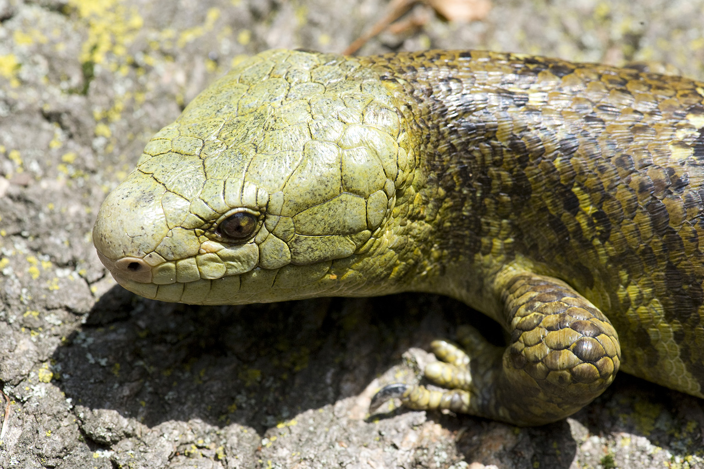
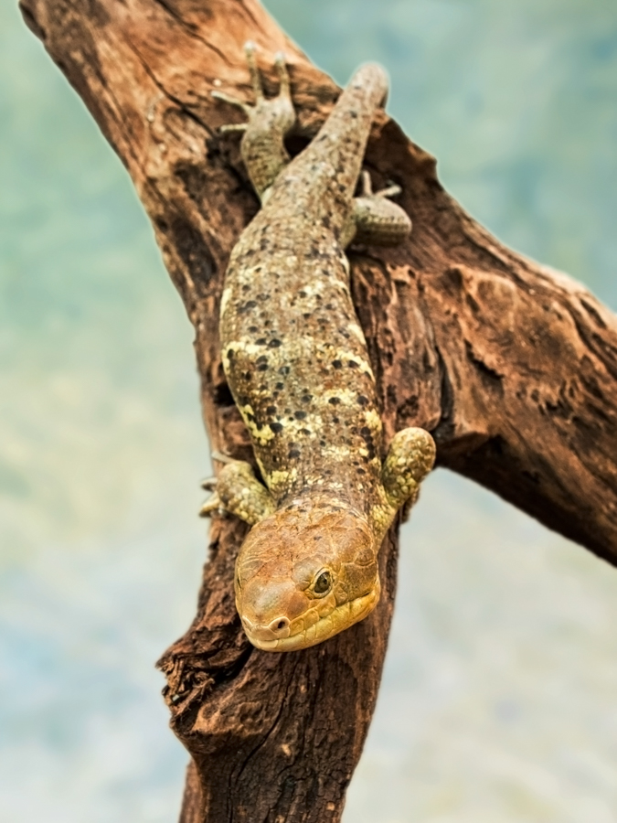
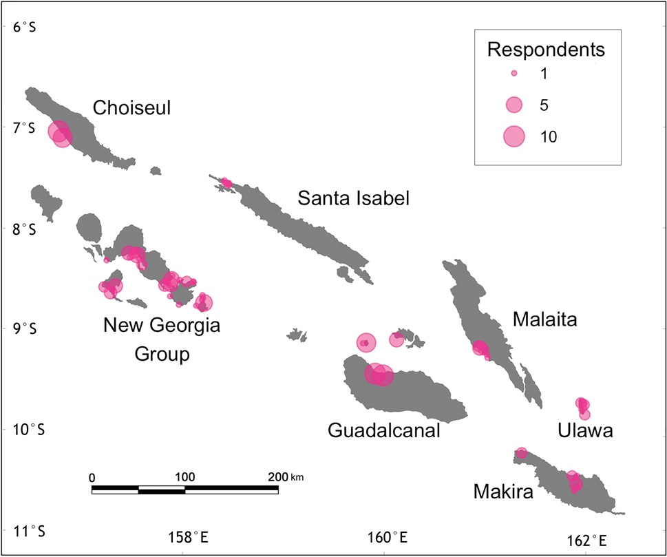

Description
The skinks live in a social group. They have a shy, reclusive nature. Skinks are nocturnal and you usually only see them at night but occasionally can be spotted early in the morning. They are completely aboreal and use their tails to assist with climbing trees.
Conservation
They are not formally listed under the IUCN Red List but they are protected by the CITES Appendix II. This regulates the amount of the species allowed to be captured for pet trade.

Behavior
The skinks live in a social group. They have a shy, reclusive nature. Skinks are nocturnal and you usually only see them at night but occasionally can be spotted early in the morning. They are completely aboreal and use their tails to assist with climbing trees.

Habitat
Tropical rainforests in the Solomon Islands chain.

Other Names: Monkey-tailed skink, Solomon Island prehensile-tailed skink Average Size: Length: 28-36 inches Weight: 14-28 ounces Lifespan: In the wild: Unknown In human care: Estimated at 15 years
Diet: Vegetation, leaves, flowers and fruit Sexual Maturity: 2 years of age Predators: Birds of prey, rats, snakes and humans